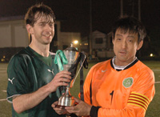
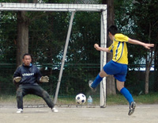
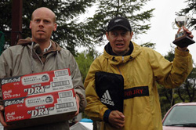

|  |
|
Hibs won their 2nd FJ Cup on Sun 31st beating Kanto Celts with a Golden Goal
|
Sala Edge Out Hibs With Historic Victory
YC&AC, Sunday, May 24th
In terms of positions in the league table this game had little meaning. However, in terms of pride and history there was everything to play for. Attempting to beat Hibs for the first time in a league game, Sala pushed a little harder in the last 20 minutes, found their match winner, and fought their way to a deserved 1-0 victory over last year's champions. more ...
ST
|  |
|
'King Kazu' scored 4 goals as RW Geckoes rout Saitama JETS 7-0 at Mitsuike koen.
|
Geckoes Fly Past Jets
Mitsuike Koen, Saturday, May 24th
A good day for footy on a warm Saturday afternoon in May the Geckoes and Jets showed up at a new pitch for both teams I believe. Very similar to Oi-dirt with perhaps a few more bumps and therefore bobbles. The ref made sure every was ready, shirts tucked in? Ok, very good, let’s go.
The Jets were a bit out of sorts and fielding some new players, which was the excuse they gave me after the game anyway, but fair enough I didn’t recognize many of them. more ...
ST
A Tale of Two Sitters – Vags End 3-game Winning Streak.
|  |
|
Lenny Tui picks up the trophy as Chiba JB (aka Sala FC) won their 5th ALT tournament in Nagano. more
|
Hodogaya Koen, Saturday, May 23rd
A masterclass in survival saw Barbarians defeat an over-populated Vags team at the luxurious Hodogaya Koen by a whopping 4-0. more ...
KG
Lions Kept Caged at Sala Zoo! Zoo Keepers Fight!
Fukuda Denshi, Saturday, May 9th
With animal welfare representatives waiting in the wings, Sala FC did their level best to ensure that these Lions were whipped, tamed and then caged early doors with a minimum of distress to the big cats. With Chief Lion Tamer, Rob Harlow slotting home 2 goals in the first 10 minutes and Head Zoo Keeper, Paul Clarke sweeping out the cages at the back, all that remained for Sala to do was throw a couple of meager scraps to the hungry carnivores, so as not to encourage cries of animal cruelty, have a bitch-fight with each other and ride out the match for a comfortable 2-0 victory. more ...
ST
Dutch Go Dutch to Finish
Yoyogi NHK, Saturday, May 16th
And with a spectacular 3-3 draw with the Barbarians team, another Division Two season has come to pass for the Dutch. more ...
LV
Raving Madness on the Blasted Heath
Sagamisansen, Sunday, May 17th
Obviously the raving madness referred to in the title is the insane idea of trying to play a game of football with a 50 mile-an-hour hurricanoe blowing almost straight down the field carrying a limitless cargo of horizontal rain that started as fine as an aerosol spray, gained enough strength during the first half to stab more needles into your arms and legs than even the most voracious smack addict could ever wish for, and in the second half - well, I've no idea: it was blowing so hard into my eyes I had no chance to look up and see. But as the sportswriter's venerable cliché says, it was the same for both sides, and it was the Robert Walters Clash who survived it better than the Albion Old Boys to depart the sodden scene at Sagamisansen with a much-needed 3-1 win. more ...
TC
Doyle Delivers
Fukuda Denshi, Saturday, May 16th
Vags extended their winning streak to 4 with a good one against Maritzio. Maritzio’s results have improved considerably of late and it was a much changed (and improved) squad that lined up against us, and the game was in sharp contrast to the two comfortable victories already posted against them this season. more ...
RS
Who put that baby there?
ASIJ, Sunday 10th May
The most heart-stopping moment of BFC's 2-0 win over the JETs was the baby Pomares wrapped in a blanket and almost getting stepped on by giants in football boots. more ...
AH
Panther’s Purrfect 10
Misato, Sunday 10th May
It is with a tear in my eye that I write this, my last report, for the Panthers. I’m not sure if it because I am sad to leave or there is still dust in my eyes from playing in the sand pit which is Misato! I think this one has been done to death and Kev “conspiracy theory” Gray’s views on the subject are well known, to everyone in Tokyo!! Suffice to say it was a very nice day and nice weather for a bit of footy more ...
LR
Low-Octane Old Boys Lack Final Spark
YCAC, Saturday, May 9th
Flat battery, no gas in the tank, wheels coming off - whichever motoring metaphor you choose it looks as if the Albion Old Boys promotion juggernaut has become a clapped-out jalopy as an embarrassing second-half breakdown allowed second-placed Zion FC to speed off into the distance with a comprehensive 7-3 win. more ...
TC
The African Lions Still Dominating the British Lions.
ASIJ, Sunday 3rd May
With the first round game finishing 1-0 to Lions, BFC were eager to pull one over the ex-Div 2 champs....and with Lions still unable to field their first choice string.....they still had a strong 16, including the infamous Orlando Torres, but this time not between the posts, but upfront....Fernando Torres?! more ...
HS
Flag-happy, whistle-shy, waste of time!!!
ASIJ, Sunday 3rd May
Be nice if the TML posted this report. It is an accurate reflection of events which spoiled a perfect evening under a crescent-shaped moon.
Result: BFC held to a 1-1 draw by the Lions. A flag-happy linesman and a referee who should have over-ruled a blatantly false offside left a sour taste. more ...
AH
|